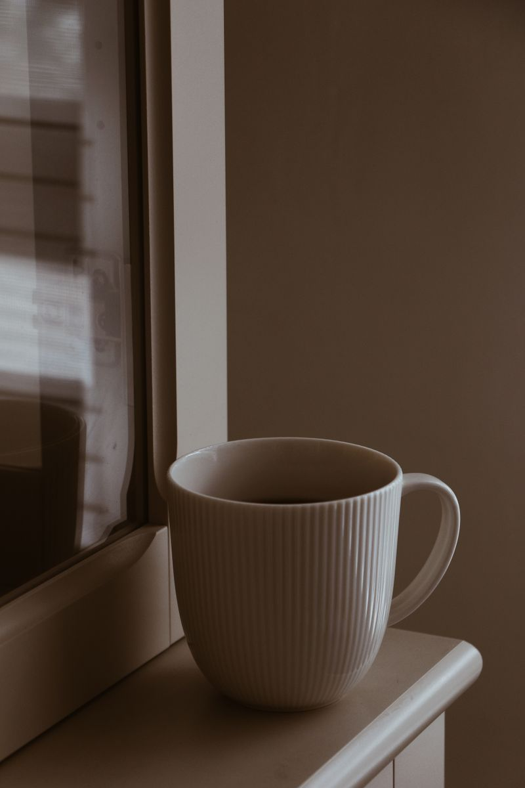
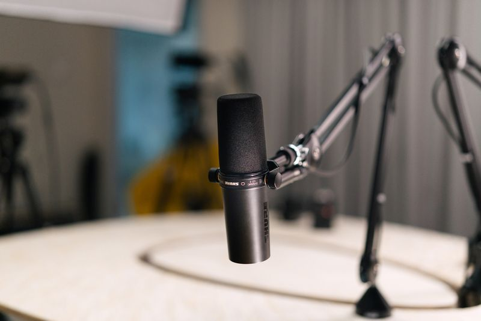

Steady speaking, designed like a quiet instrument.
Warm monochrome bone canvas, crisp 1px borders, Newsreader editorial typography, muted semantic pastels, and zero visual noise.
Daily voice session
One minute of cyclic sighing followed by one short speaking drill. Local and offline.

I’m about to speak
Three slow sighs, then say your opening line aloud twice before dialing.
Breathe in
Two nasal inhales, then a long mouth exhale.
Cyclic sighing
2023 Stanford trial: 5 min lowered anxiety faster than mindfulness.
Breathe and speak
3 s inhale, then start a short phrase softly on a 7 s exhale.
Box breathing
4 in, 4 hold, 4 out, 4 hold. Steady count under pressure.
Extended exhale
4 in, 8 out. Longer exhales slow heart rate before rest.
Read aloud
Soft starts at each pause mark with optional on-device recording and live pace measures.

Word warm-up
Weaves in your hard sounds and feared words at roughly 1 in 3 prompts.
Practice questions
Work meetings and phone calls. Position first, one reason, one check.
Baseline fluency rose from 2 to 4 of 5 after two minutes of breathing.
Rank D Speaker · Level 9 · 1,340 XP · 14 practice days
Then and now
Compare your cold baseline read against this week’s take. Recordings never leave your phone.
Principles & transparency
Practice, not therapy
This app gives you a quiet place to practise breathing and speaking techniques every day. It does not treat stammering or anxiety, and makes no cure promises.
100% private and offline
Recordings stay in IndexedDB on your device and never leave your phone. Drill clips expire automatically after 14 days while baseline proof clips stay until you delete them.
Zero streak guilt
Five practice days in a week earns a shield that quietly covers a missed day. A broken streak resets silently without red warnings.